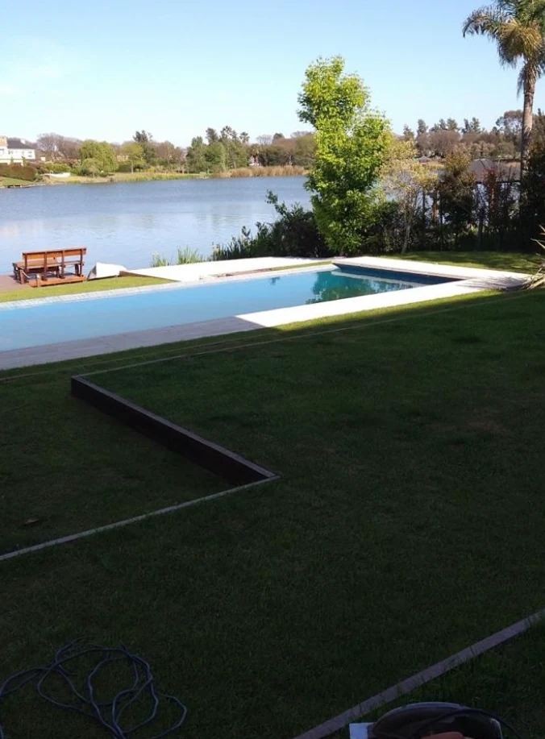
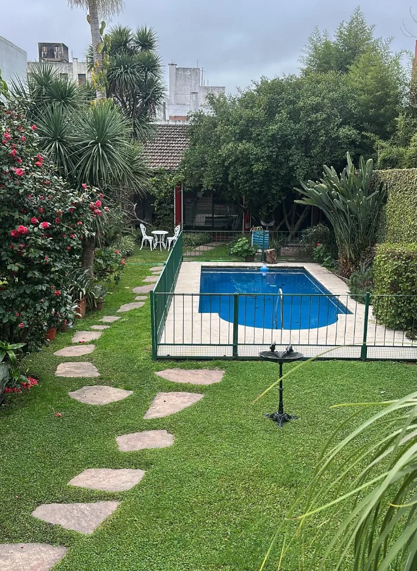
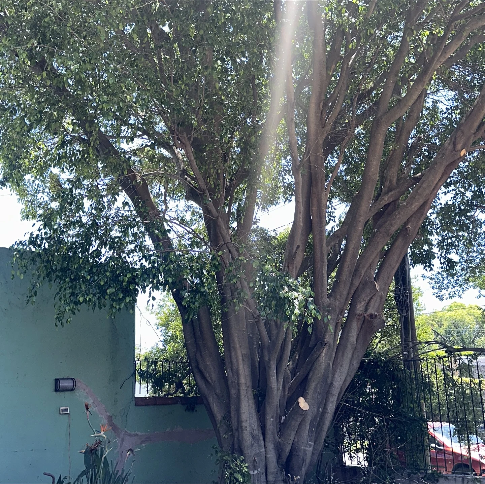
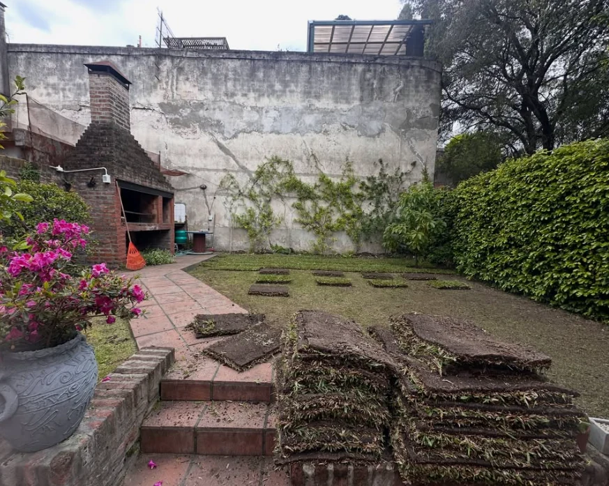
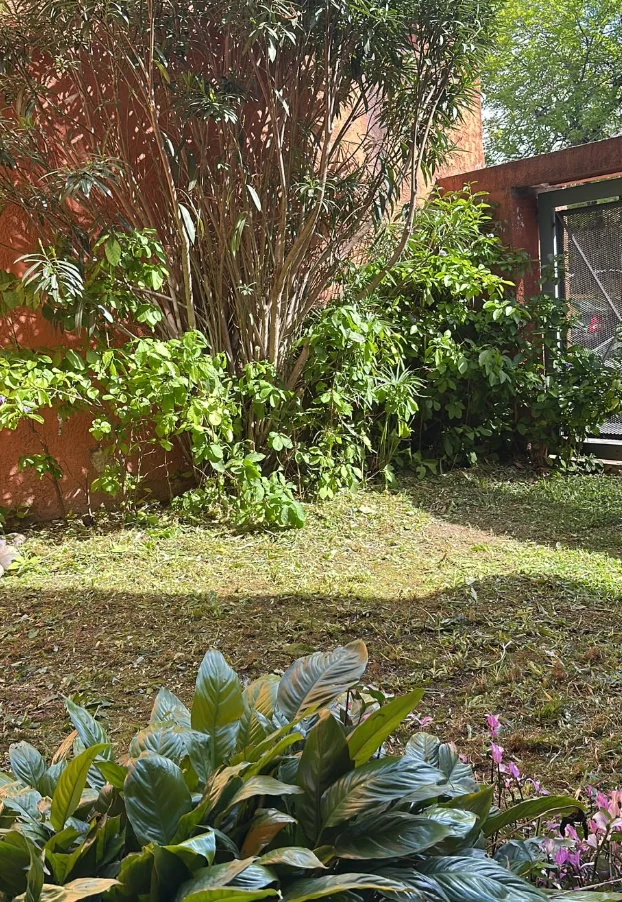
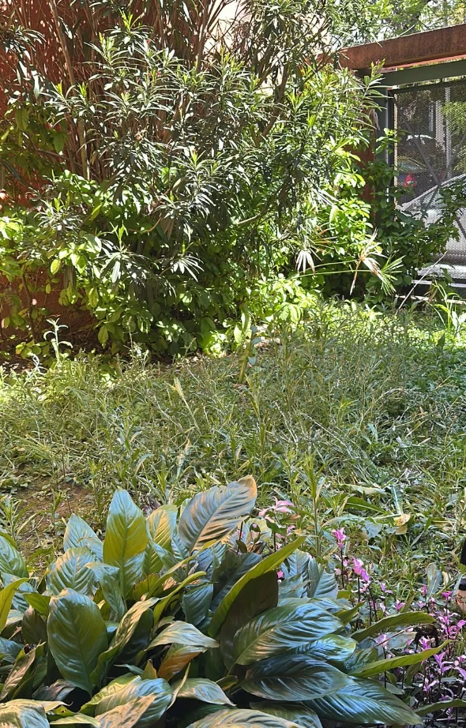
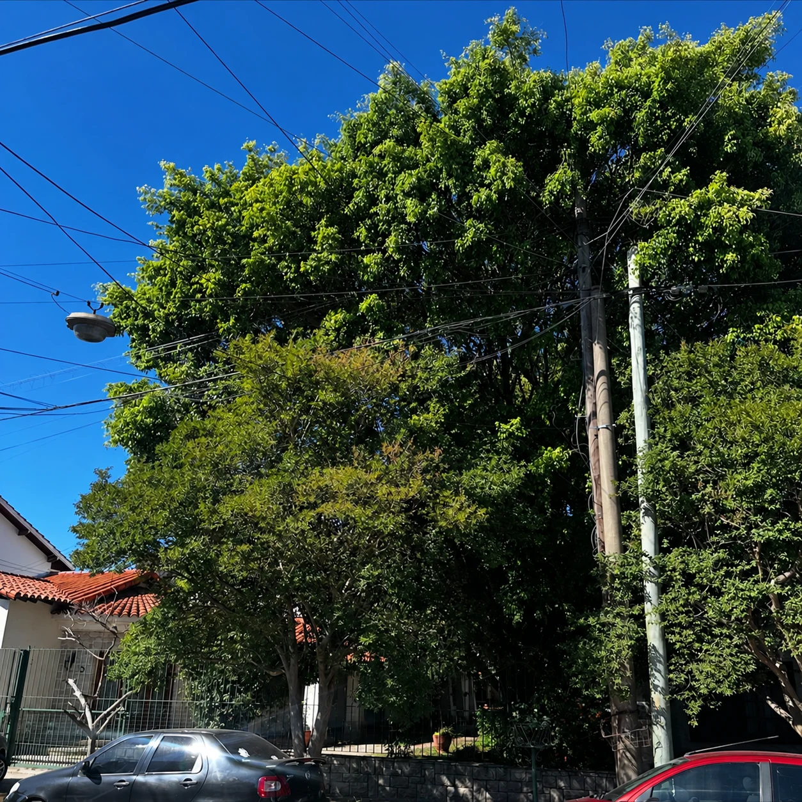

01 / DISEÑO
Diseño y recuperación
Diseñamos jardines y recuperamos espacios verdes para que vuelvas a disfrutarlos.
Consultar servicioJardinería Total
DISEÑO Y CUIDADO DE ESPACIOS VERDES
Preparando tu espacio verde…
JARDINERÍA TOTAL · ZONA NORTE / CABA
Diseño, recuperación y mantenimiento de jardines en Zona Norte y CABA.
LO QUE HACEMOS
Diseñamos, recuperamos y mantenemos jardines, balcones y terrazas. Corte de pasto, podas, riego y nivelación para cuidar tu espacio verde.

Diseñamos jardines y recuperamos espacios verdes para que vuelvas a disfrutarlos.
Consultar servicio
Corte de pasto y mantenimiento para que tu jardín se mantenga cuidado y prolijo.
Consultar servicio
Podas y cuidado de árboles y plantas para poner a punto tus espacios verdes.
Consultar servicio
Trabajos de riego y nivelación según las necesidades de tu jardín.
Consultar servicioJardines · Balcones · Terrazas Zona Norte / CABA
CUIDADO QUE SE VE
Jardines, césped y poda: una selección de nuestros trabajos. Deslizá la barra para ver el antes y el después.


Mové la barra y descubrí el cambio en el jardín.

Antes y después del trabajo, vistos desde distintos ángulos.
Fotos y video de nuestros espacios verdes.
SIMPLE Y CERCANO
Un proceso claro para llevar tu idea del primer mensaje al espacio que imaginaste.
Escuchamos qué necesitás y cómo te gustaría disfrutar tu jardín.
Evaluamos el espacio y definimos el trabajo a realizar.
Coordinamos los detalles para llevar la propuesta a la práctica.
ZONA DE COBERTURA
Trabajamos en jardines, balcones y terrazas de Zona Norte y Ciudad de Buenos Aires. Contanos dónde estás y qué necesitás para coordinar el trabajo.
Consultar por mi zonaOPINIONES EN GOOGLE
Destaca la buena atención, una poda en altura rápida y segura, y la limpieza al terminar.
Cuenta que le respondieron enseguida, recibió un presupuesto conveniente y el trabajo quedó prolijo.
Señala que cumplieron en tiempo y forma y que el resultado superó sus expectativas.
BUENO SABER
Lo esencial para empezar a conversar sobre tu espacio verde.
Escribinos por WhatsApp al 11 6275-9282. Contanos qué trabajo necesitás, en qué zona estás y, si podés, compartí fotos del espacio.
Sí, contanos tu idea y las características del espacio para evaluar una propuesta.
Trabajamos en Zona Norte y CABA. Consultanos por tu ubicación para coordinar el servicio.
Sí. Diseñamos, recuperamos y mantenemos jardines, balcones y terrazas.
Tu ubicación, medidas aproximadas, fotos y el tipo de servicio que estás buscando.
HABLEMOS DE TU ESPACIO
Contanos qué necesitás para tu jardín, balcón o terraza. Trabajamos en Zona Norte y CABA.
Zona Norte / CABA
11 6275-9282